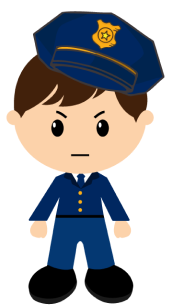
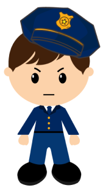

01 PERSONAL WEB
02 RESPONSIVE WEB
03 ADAPTIVE WEB
04 WEBSITE RENEWAL
05 MOBILE UI&UX


개인 웹사이트
어떠한 색을 지니고 잇으며, 어떠한 사람인지를 보여주기
위한 목적으로 제작하였습니다.

LG전자
어떠한 색을 지니고 잇으며, 어떠한 사람인지를 보여주기
위한 목적으로 제작하였습니다.

2020세이브더칠드런
국제어린이마라톤
리뉴얼되기 전의 홈페이지를 구현하였고 , 메인 컬러인 레
드를 사용하였습니다.

대전 예술의전당
디자인과 코딩작업을 하였습니다.
 


맛경찰
생겼습니다. 여러 어플을 사용하면서 아쉬운 기능들이 있었고, 이러한 아쉬움
들을 개선하기 위하여 맛집 소개 어플 '맛경찰'을 기획하였습니다.
‘맛경찰’만의 캐릭터를 만들어 어플의 퀄리티를 높히려 하였고, 단점을 최소화
하고 장점을 부각시켜 불필요한 기능은 과감하게 빼고 필요한 기능들을 넣어
어플의 활용성을 높히는데에 중점을 두었습니다.